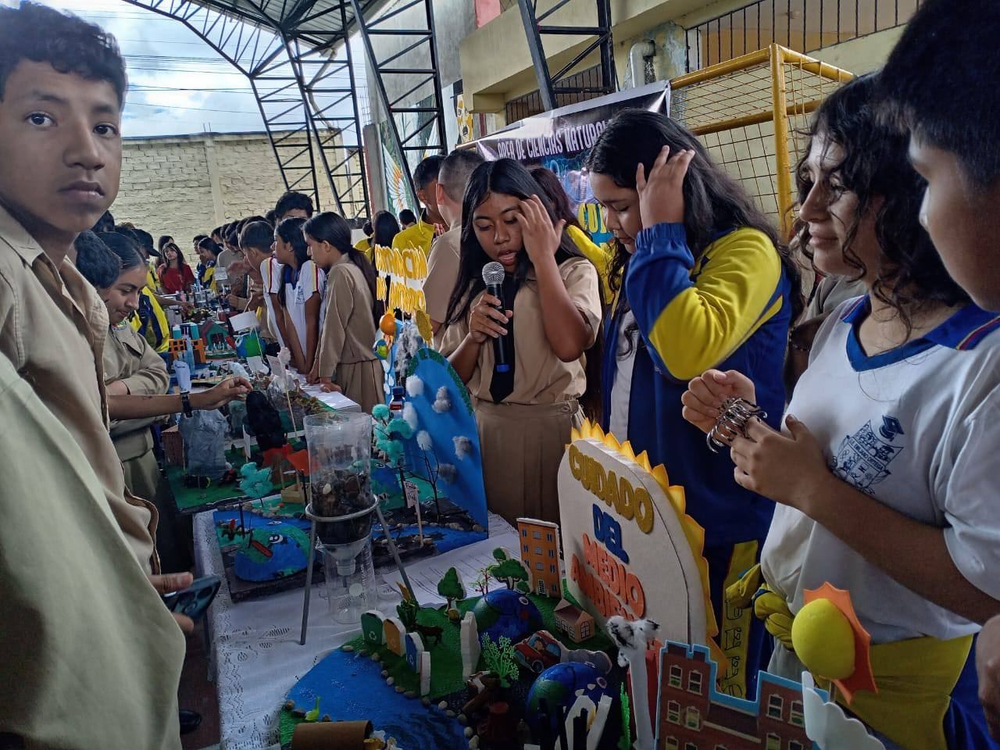

La Básica Superior en la Unidad Educativa Emiliano Ortega Espinoza, ubicada en el cantón Catamayo, provincia de Loja, Ecuador, corresponde a una etapa educativa fundamental dentro del proceso formativo de los estudiantes, abarcando los últimos años de la Educación General Básica (EGB). En este nivel se consolidan los aprendizajes adquiridos en etapas anteriores y se fortalecen las bases académicas necesarias para la transición hacia el Bachillerato.
Durante la Básica Superior, la institución promueve el desarrollo de habilidades críticas, analíticas y creativas, incentivando el pensamiento reflexivo y la capacidad de resolver problemas. Asimismo, se fortalecen valores esenciales como la responsabilidad, el respeto, la solidaridad, la disciplina y la cooperación, elementos clave para la formación integral de los estudiantes y su convivencia armónica en la sociedad.
El currículo académico ofrece una formación equilibrada mediante asignaturas troncales y áreas complementarias, permitiendo a los estudiantes ampliar sus conocimientos científicos, humanísticos, artísticos y tecnológicos. Este enfoque integral favorece el desarrollo intelectual, social y emocional de los jóvenes, preparándolos para asumir nuevos retos educativos y personales.
La Unidad Educativa Emiliano Ortega Espinoza proporciona un ambiente educativo seguro, inclusivo y estimulante, contando con docentes calificados y comprometidos que acompañan permanentemente el proceso de aprendizaje. Se aplican metodologías activas, recursos didácticos actualizados y estrategias pedagógicas innovadoras que fortalecen el aprendizaje significativo.
Además, se fomenta la participación de los estudiantes en actividades culturales, deportivas, artísticas y cívicas, contribuyendo al desarrollo de habilidades sociales, liderazgo y sentido de pertenencia institucional. Estas actividades complementan la formación académica y fortalecen el desarrollo integral de los estudiantes.
La institución busca que los estudiantes de Básica Superior se formen como jóvenes responsables, críticos y comprometidos con su entorno, capaces de enfrentar con éxito los desafíos académicos y personales del futuro. De esta manera, se contribuye al desarrollo de una comunidad más informada, participativa y consciente en Catamayo y la región.